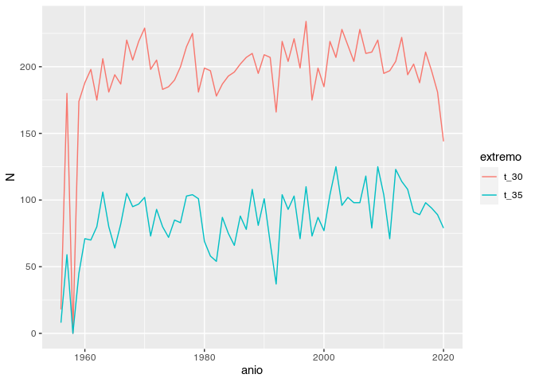
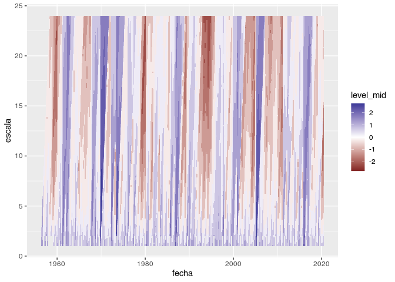
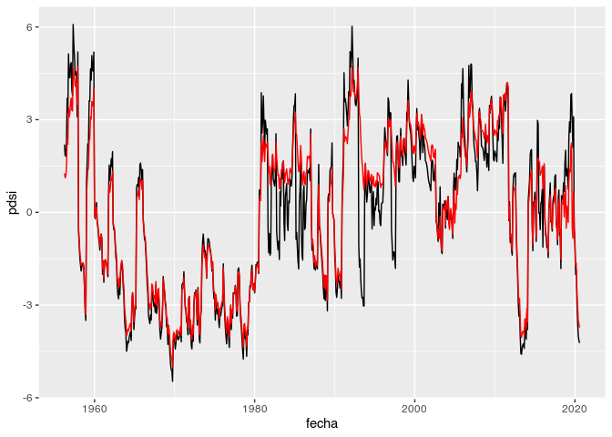

Lectura de archivo NH
Asumiendo que los datos de estaciones de la base de datos NH están en una carpeta “datos” dentro del proyecto, la función leer_nh() funciona así:
datos <- leer_nh("datos/NH0011.DAT")## Warning: 1 parsing failure.
## row col expected actual file
## 20969 etp 4 chars 3 'datos/NH0011.DAT'
head(datos)## codigo codigo_nh fecha t_max t_min prcp lluvia_datos lluvia llovizna
## 1: 5 0011 1956-04-01 25.0 11.2 0.0 0 NA NA
## 2: 5 0011 1956-04-02 28.7 16.5 2.4 1 NA NA
## 3: 5 0011 1956-04-03 28.7 20.7 1.5 1 NA NA
## 4: 5 0011 1956-04-04 26.7 19.8 0.0 0 NA NA
## 5: 5 0011 1956-04-05 25.6 15.6 0.0 0 NA NA
## 6: 5 0011 1956-04-06 27.2 16.4 0.9 1 NA NA
## granizo nieve t_aire_max t_aire_min t_suelo_max t_suelo_min heliofania
## 1: NA NA NA NA NA NA 11.1
## 2: NA NA NA NA NA NA 2.2
## 3: NA NA NA NA NA NA 3.8
## 4: NA NA NA NA NA NA 0.0
## 5: NA NA NA NA NA NA 3.0
## 6: NA NA NA NA NA NA 0.4
## heliofania_rel p_vapor hr td rocio viento_med viento_2m rad etp
## 1: 94 NA NA NA NA NA NA 22.6 NA
## 2: 18 NA NA NA NA NA NA 9.0 NA
## 3: 32 NA NA NA NA NA NA 11.4 NA
## 4: 0 NA NA NA NA NA NA 5.7 NA
## 5: 25 NA NA NA NA NA NA 10.0 NA
## 6: 3 NA NA NA NA NA NA 6.2 NAAdemás la funciónn metadatos_nh() devuelve un data frame con los metadatos de las estaciones que se puede utilizar para conocer el nombre y ubicación de las estaciones.
Conteo de días que cumplen con alguna condición
Para contar la cantidad de diás con temperatura por encima de un umbral o días con precipitación igual a cero (o básicamente que cualquier variable cumpla con cualquier condición) se utiliza la función extremos() [o inserte aquí un mejor nombre].
Por ejemplo si queremos la cantidad de días donde la temperatura máxima fue mayor o igual a 30 grados en toda la serie.
datos %>%
summarise(extremos(t_30 = t_max >= 30))## N prop na extremo
## 1 12616 0.5532605 721 t_30Pero si quisieramos hacer el mismo conteo para cada año:
datos %>%
group_by(anio = floor_date(fecha, "year")) %>%
summarise(extremos(t_30 = t_max >= 30))## `summarise()` ungrouping output (override with `.groups` argument)
## # A tibble: 65 x 5
## anio N prop na extremo
## <dttm> <int> <dbl> <int> <chr>
## 1 1956-01-01 00:00:00 18 0.18 175 t_30
## 2 1957-01-01 00:00:00 180 0.496 2 t_30
## 3 1958-01-01 00:00:00 0 NaN 365 t_30
## 4 1959-01-01 00:00:00 174 0.477 0 t_30
## 5 1960-01-01 00:00:00 188 0.514 0 t_30
## 6 1961-01-01 00:00:00 198 0.574 20 t_30
## 7 1962-01-01 00:00:00 175 0.479 0 t_30
## 8 1963-01-01 00:00:00 206 0.566 1 t_30
## 9 1964-01-01 00:00:00 181 0.495 0 t_30
## 10 1965-01-01 00:00:00 194 0.532 0 t_30
## # … with 55 more rowsEsta fucnión también acepta contar cantidad de días según distintos umbrales. De yapa, un gráfico.
datos %>%
group_by(anio = floor_date(fecha, "year")) %>%
summarise(extremos(t_30 = t_max >= 30,
t_35 = t_max >= 35)) %>%
ggplot(aes(anio, N)) +
geom_line(aes(color = extremo))## `summarise()` regrouping output by 'anio' (override with `.groups` argument)
SPI
La función spi calcula el SPI para distintas escalas:
datos %>%
summarise(spi(fecha, prcp, 1:24)) %>%
head()## fecha escala spi
## 1 1956-04-01 1 0.4887764
## 2 1956-05-01 1 0.7764218
## 3 1956-06-01 1 0.9467818
## 4 1956-07-01 1 2.4233927
## 5 1956-08-01 1 NA
## 6 1956-09-01 1 1.2206403La salida se puede graficar faćilmente con ggplot
datos %>%
summarise(spi(fecha, prcp, 1:24)) %>%
ggplot(aes(fecha, escala)) +
geom_contour_filled(aes(z = spi, fill = stat(level_mid))) +
scale_fill_gradient2()## Warning: Removed 353 rows containing non-finite values (stat_contour_filled).
Índice de Severidad de Sequía de Palmer
pdsi computa el PDSI con los coeficientes de Palmer (1965), pdsi_ac es la versión autocalibrada.
datos %>%
group_by(fecha = floor_date(fecha, "month")) %>%
summarise(prcp = sum(prcp, na.rm = TRUE),
etp = sum(etp, na.rm = TRUE)) %>%
mutate(pdsi_ac = pdsi_ac(prcp, etp),
pdsi = pdsi(prcp, etp)) %>%
ggplot(aes(fecha, pdsi)) +
geom_line() +
geom_line(aes(y = pdsi_ac), color = "red")## `summarise()` ungrouping output (override with `.groups` argument)